A 95-second Spider-Verse-style short. Every frame comes out of one Python build in Blender. No AI-generated video. Here is the whole path from the first look test to the final cut, mistakes included.
Six days into being a hero, KITE has to stop the GLITCH, a voxel creature from a torn sky that drains the colour out of every street it touches, before it reaches the tallest tower.
Kite narrates, the way Miles does in the films. The colour arc carries the plot: a saturated neon city, a drained blue-violet page when the Glitch lands, and the colour flooding back after the final punch. It was rewritten twice. The first version, a 60-second chase written overnight, had no story to follow. Dror's notes on it started the V1 rebuild.
01
The look
Before anything moved, one frame had to read as a comic panel. The style lives in a shared shader library: toon bands from Shader-to-RGB, screen-space Ben-Day dots that grow in the shadows, hatching, a hard rim light, Grease Pencil Line Art for the ink, and a chromatic print offset in the compositor.
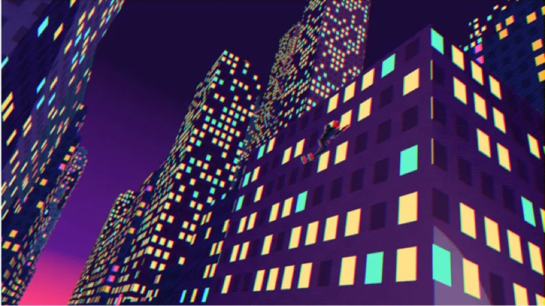
First try Too many lit windows, no visible ink, the hero gets lost.
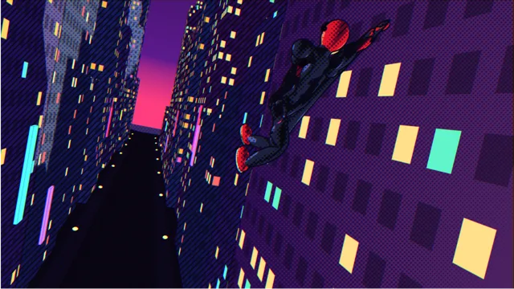
The look lands The style frame the first version was built on.
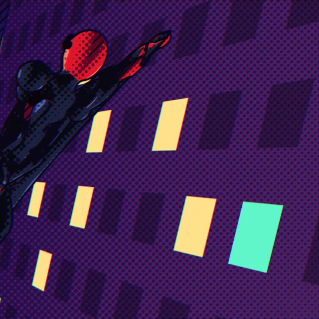
Close-up crop: dots, hatching, ink line and print offset.
The look kept changing all the way to the end. Look passes 2 to 4 in V1.3 halved the halftone, pulled saturation down about 9%, and gave the Glitch an acid-green ramp so the two characters separate from the violet city by value as well as by hue.
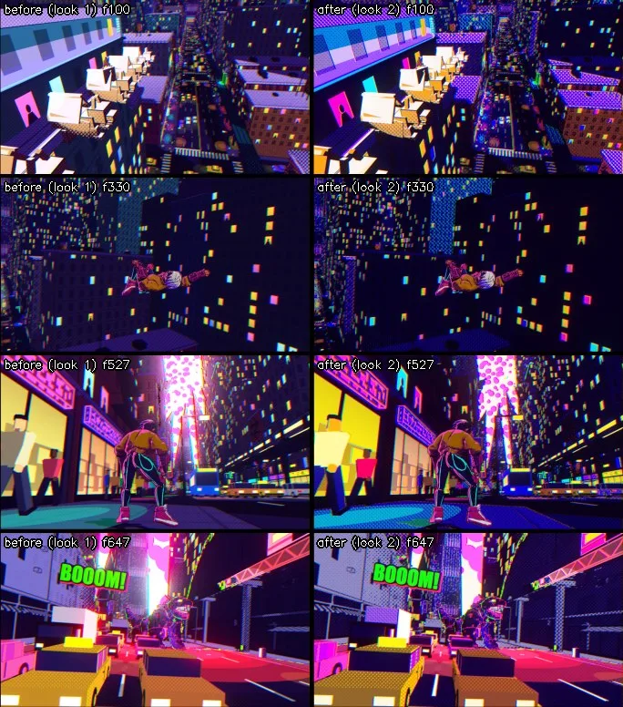
Look pass 2: before / after.
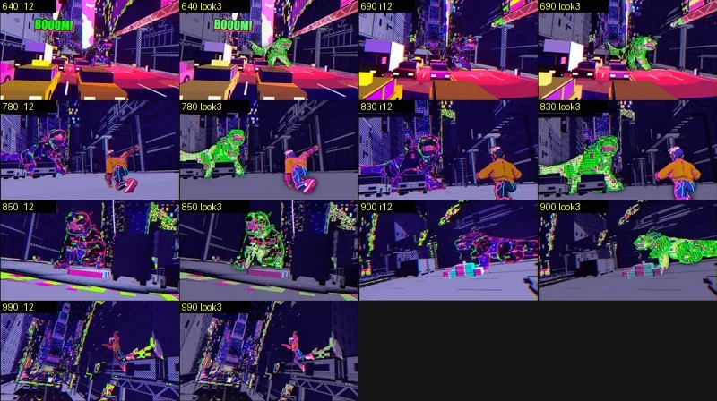
Look pass 3: i12 vs i13 on the Glitch shots.
02
The hero
The first hero was made of rigid ellipsoids per bone. It read as a wooden mannequin, and Dror's note was simply that it looked cheap. So the hero became KITE, an original character: mustard bomber jacket (the only yellow in the film, so the eye always finds Kite), black suit with cyan lines, magenta wrist launchers, white lenses.
Concept A front A-pose sheet, drawn for image-to-3D.
Tripo v3.1 image-to-3D gave a clean model: 2M faces, decimated to 127k.
Rigged by hand Tripo's auto-rigger treated Kite as a generic creature, so the skeleton was fitted from mesh cross-sections and skinned with bone heat.
V1 look Bold ink outline, colour-shifted cel bands and a coloured rim. The dark hatching was dropped.
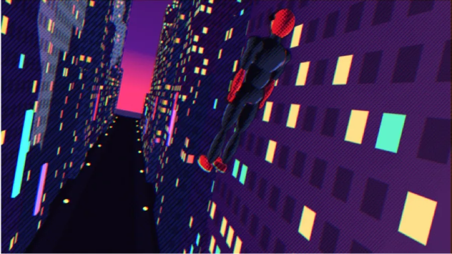
V0 The mannequin.
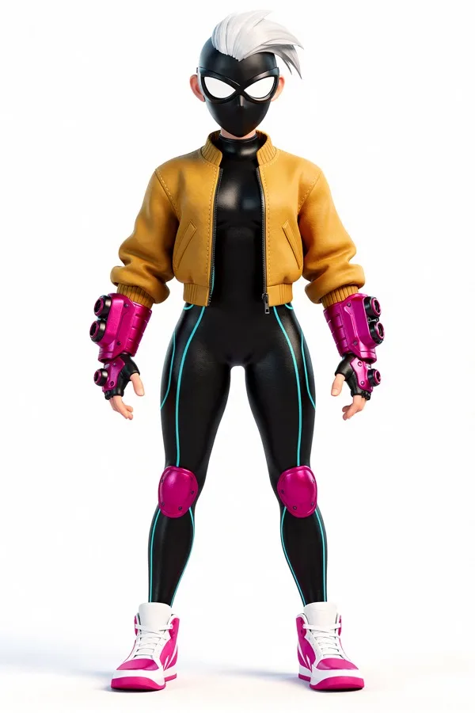
KITE concept.
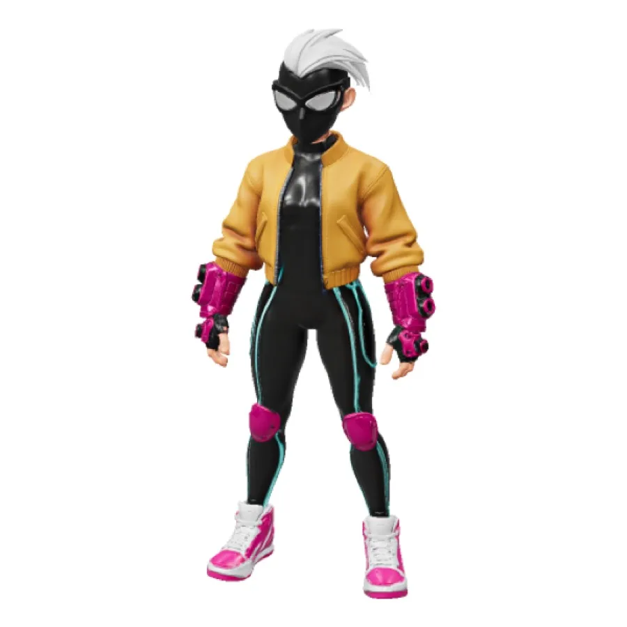
Tripo image-to-3D.
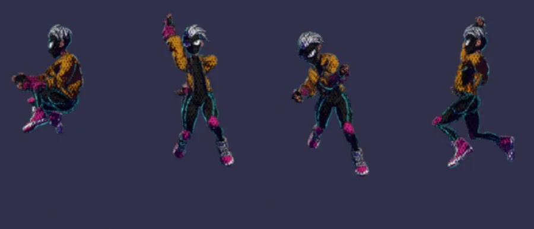
Rigged and toon-shaded.
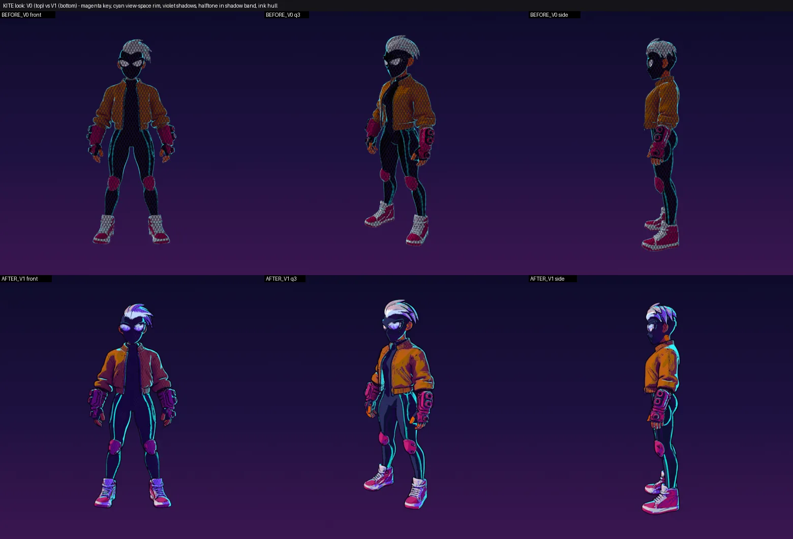
Hero look: V0 (top) vs V1 (bottom).
03
The Glitch & the city
V0's villain was a cloud of 150 cubes nobody could read. The GLITCH became a rigged voxel kaiju: a smooth skinned mesh that Geometry Nodes turn into cubes every frame, so it deforms like a creature but always reads as pixels. It also shatters.
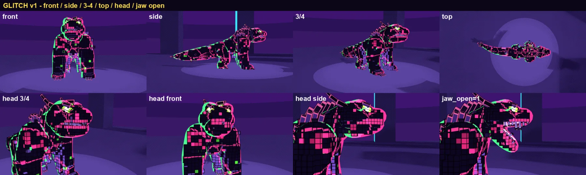
Turnaround and jaw.
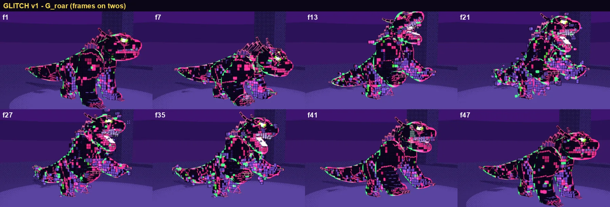
Roar, animated on twos.
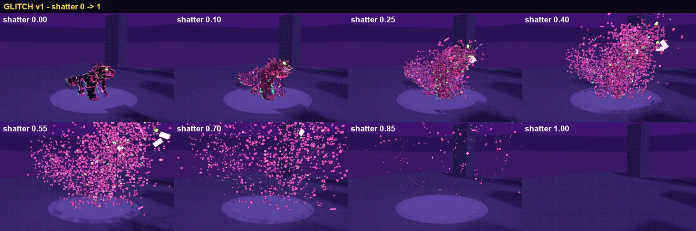
Shatter.
The city went from boxes with nothing moving to a kit with storefronts, fire escapes, an el-train, a spire at the end of the avenue and 473 driving cars. Shots were then staged on the real map: the perch, the billboard gag, the rift and the tower all have fixed coordinates.
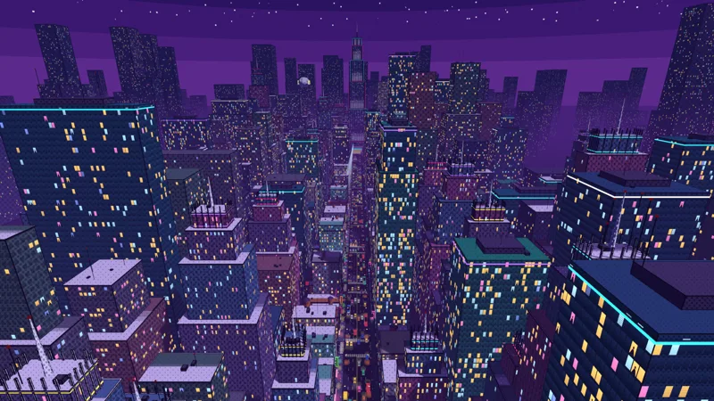
Aerial, the cold-open crane.
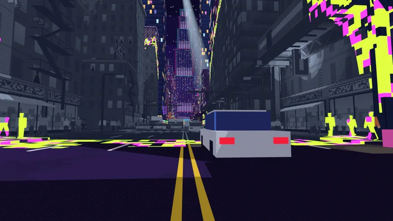
The colour drain at street level.
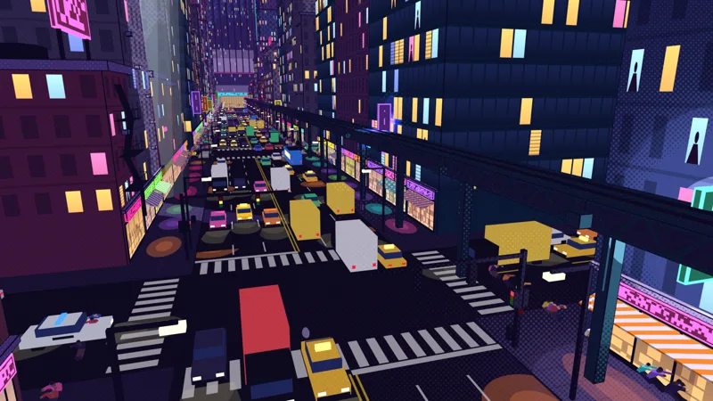
Crowd panic.
04
Animation & camera
Characters are animated on twos and cameras on ones, which is the Spider-Verse rhythm. Motion came from a mix of Kimodo text-to-motion clips, Mixamo clips and hand-built key poses for swings and impacts. Most of the work went into making it read: anticipation, smears, hit-stops, squash on contact, and how much of the frame the hero fills.
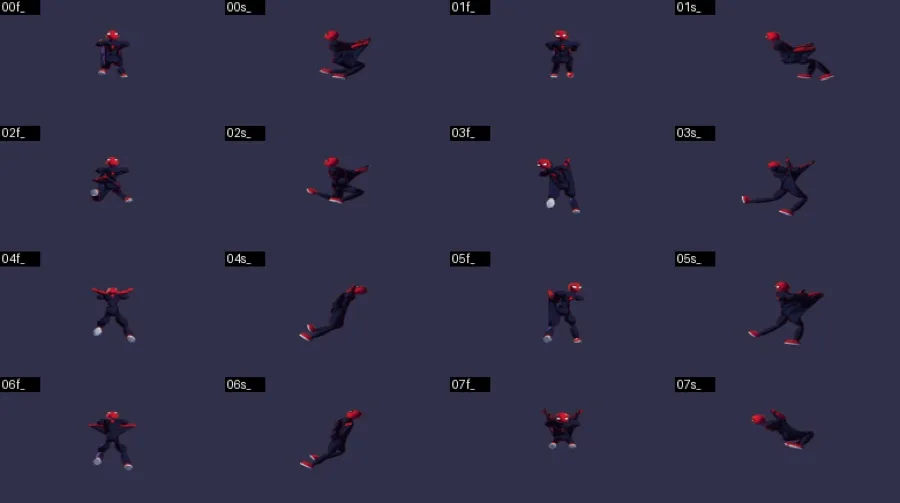
Bug Legs swinging backwards. Limb bones that point down rotate the opposite way on X.
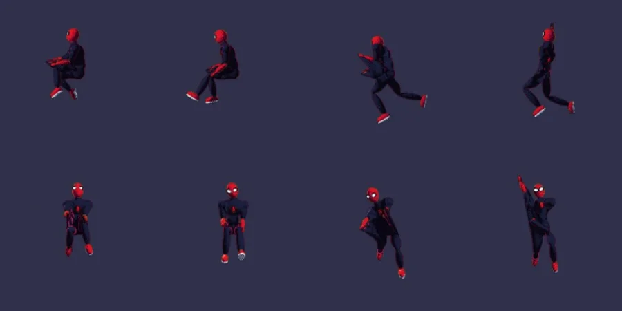
Fixed A pose test sheet from side and front caught it.
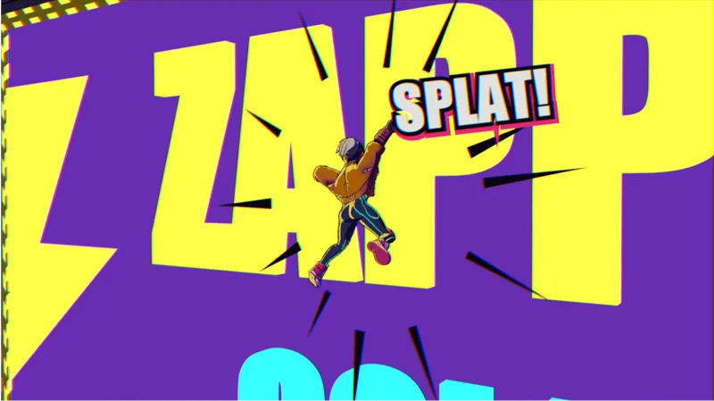
S04: billboard squash.
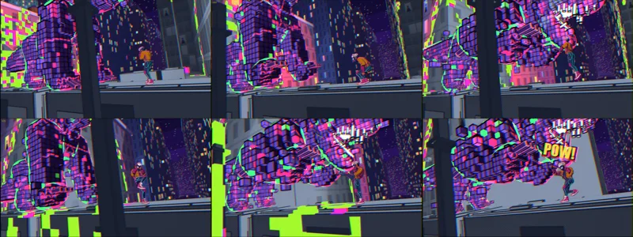
S09: contact beats.
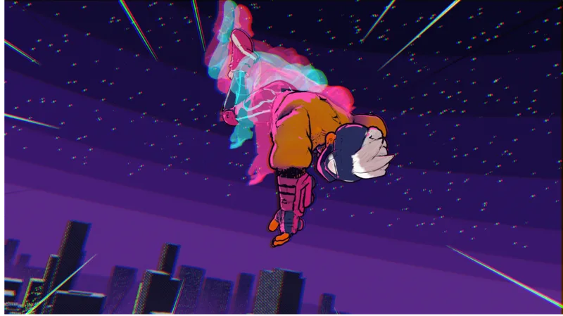
S14: Kite goes from 5% to 87% of frame height.
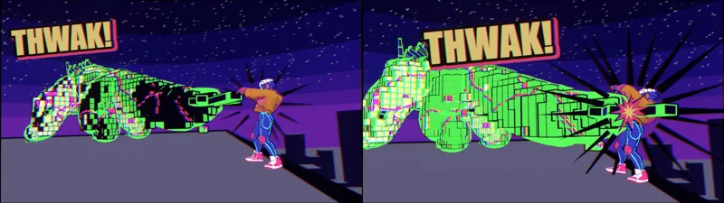
i16: the tail strike lands on frame 1630.
Cameras behave like operators: spring-damped follow and aim, ease in and settle out, rotational shake on impact. An early camera shake moved the camera position and teleported it up to 6 m on hits. A motion audit measured it, and it was replaced.
05
Voice, score & sound
The whole film is timed to Kite's narration: 15 lines recorded with ElevenLabs, each transcribed back to check it. The score was generated as nine separate sections and cut on the timeline, because whole-track scores ignored the moods. Sound effects are real CC0 recordings placed on the film's own event frames (web thwips, footsteps, punches on contact frames), mixed to −14 LUFS and checked for photosensitive flashes at every cut.
V01 · “Alright, city. Deep breath…”Provisional mix · score + VO + SFX
06
The review loop
Quality came from measuring, not from the agent saying it was good. Every cut went through three kinds of check:
Blind critics
A fresh agent with no build history watches only the cut and the look bible, then scores eight axes. Self-review was never counted as blind.
Human notes
Dror reviewed cuts in Dailies, his frame-accurate review tool, and left time-coded notes: 19 on i5, 35 on i11, 22 on i13, 13 on i15c. Each one got a fix and a reply.
Measured audits
Per-frame scripts for penetrations, flicker, camera jerk, web stretch, flash safety and loudness. The penetration audit found 56 issues in 2,112 frames.
Blind-critic score, out of 10
4.0V1 animatic A1
5.0V1 animatic A2
6.0V1 render
5.0V1.3 i1
5.0i7
5.8i8
6.0i11
Each score comes from a fresh critic, so they're different raters. V1.3 was scored against a much stricter bible than V1, which is why the score dips at i1. A separate 3-model panel (GPT, Gemini, Claude) put V1.2 at 4.2 and V1.3 i3 at 5.0.
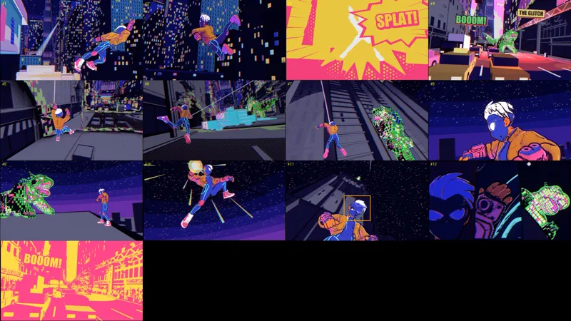
Dror's 13 Dailies notes on i15c, as stills in note order.
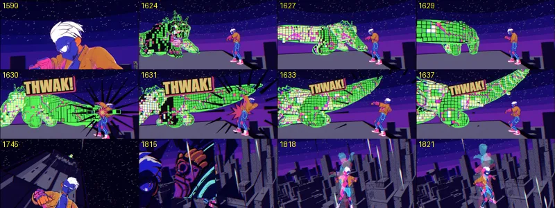
How a note gets closed: before/after frame checks.
07
Every cut, in order
Six days, from the first overnight version to i16. Pick a cut to watch it. The earlier cuts are 480p to keep the page light.
08
What we learned
Measure before you fix
“Natural motion” turned into numbers: yaw steps per frame, web stretch %, camera jerk in m/s³. The fixes went in, and then the same numbers were measured again.
The hero has to own the frame
The most repeated critic note was that Kite was too small. Percent of frame height became a gate, with a floor of 25%.
Twos vs ones bites cameras
A camera on ones that follows a character on twos jitters at swing speed. The follow cameras lock to the stepped pose.
Blind review beats self-review
The building agent always thinks it's better than it is. A critic with no history, plus a human with time-coded notes, kept it honest.
Rebuild, don't patch
V0 had a mannequin hero, no story and silent stems. V1 was a rebuild from the audit up, and it went from 4 to 6 out of 10 in a day.
Gates are part of the craft
Every delivery passed flash safety (no red flashes, at most 3 per second), loudness (−14 LUFS) and a no-blank-frame check. Renders were split across a Mac and a Windows PC.